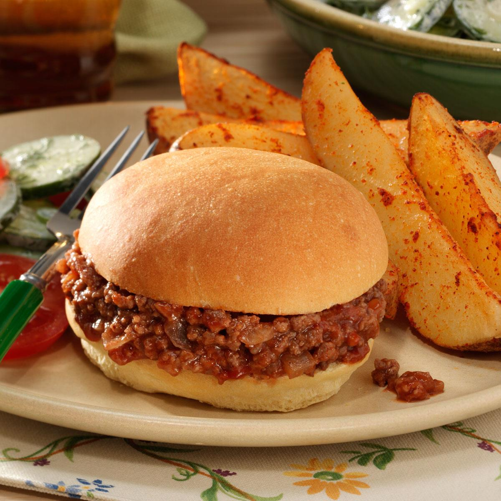

Sloppy Joes Recipe

Description
Picadillo is a popular dish in most South American cuisines. It is made with lean ground beef (or can be made with ground turkey as well), tomatoes, potatoes, and other ingredients. This authentic recipe will bring the flavors of Mexico to your plate.
Ingredients
- 1 pound lean ground beef
- 1/4 cup chopped onion
- 1/4 cup chopped green bell pepper
- 3/4 cup ketchup, or to taste
- 1 tablespoon brown sugar
- 1 teaspoon yellow mustard
- 1/2 teaspoon garlic powder
- salt and ground black pepper to taste
- 6 hamburger bunss, split
Steps
-
Heat a large skillet over medium heat. Cook and stir lean ground beef in the hot skillet until some of the fat starts to render, 3 to 4 minutes. Add onion and bell pepper; continue to cook until vegetables have softened and beef is cooked through, 3 to 5 more minutes.
-
Stir in ketchup, brown sugar, mustard, and garlic powder; season with salt and pepper. Reduce heat to low and simmer for 20 to 30 minutes.
-
Divide meat mixture evenly among hamburger buns.
More Recipes